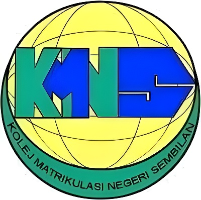

Education
Universiti Teknologi MARA
Bachelor of Computer Science (Hons.)
- CGPA: 3.66
- Dean’s List: Semester 1,2,3,4,5,6

Negeri Sembilan Matriculation College
Module 2 (Computer Science)
CGPA: 2.92
Software Developer with 3 years of experience in full stack development, enterprise systems, and AI solutions. Skilled in Angular, ASP.NET Core, C#, Java Spring Boot, SQL Server, Python, and Neo4j Graph Database. Experienced in developing ERP systems, AI chatbots, fraud detection systems, and document processing solutions. Also involved in Moodle LMS deployment, server maintenance, and system integration. Passionate about learning new technologies and building efficient, scalable applications.

CGPA: 2.92

Final year project focused on developing a mobile-based flower recognition system using deep learning. The system leverages the YOLOv4 object detection algorithm to identify flower species in real time with high speed and accuracy. YOLOv4 was selected for its balance between performance and efficiency, enabling fast inference on mobile devices. The project demonstrates practical application of computer vision and machine learning techniques for real-world image classification tasks.

Developed a full-stack e-commerce web application for computer parts using Java (JSP) with MariaDB as the database. The system supports product browsing, user interaction, and database-driven operations for managing inventory and transactions. This project demonstrates backend integration, dynamic web development, and database management using a traditional Java web architecture.